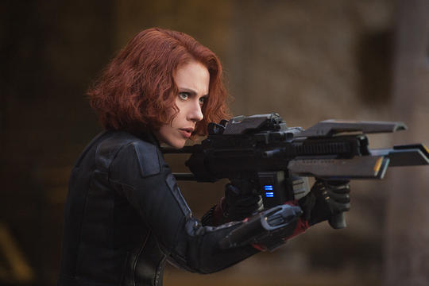
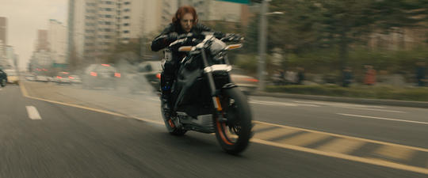
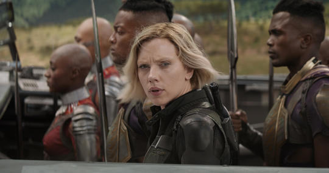

Full Name: Natasha Romanoff
Place Of Birth: Russia
Alignment: Good
Gender: Woman
Race: Human
Intelligence: 100%
Strength: 85%
Speed: 58%
Durability: 85%
Power: 100%
Combat: 64%
Exhibiting no super human abilities, the Black Widow boasts ultimate human levels of strength, agility, and stamina. She is extensively trained to near perfection in a variety of fighting styles, such as karate, judo, kung fu, and wrestling, and with all manner of weapons—both traditional and high-tech—combined with her background in gymnastics, acrobatics, and ballet to always accomplish her mission.
Natasha Romanoff was trained from a young age in a Russian facility called the Red Room to cultivate and hone a very specific set of skills that would turn her into a human warrior who continues to stand shoulder-to-shoulder with super soldiers, Asgardians and people in armored suits. However, she was convinced by Hawkeye or Clint Barton to leave her KGB masters, switched allegiances, seek redemption and began working for the good guys.
|

|

|

|